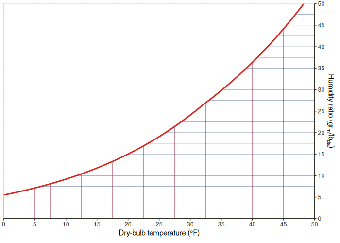
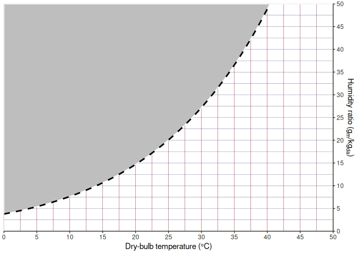
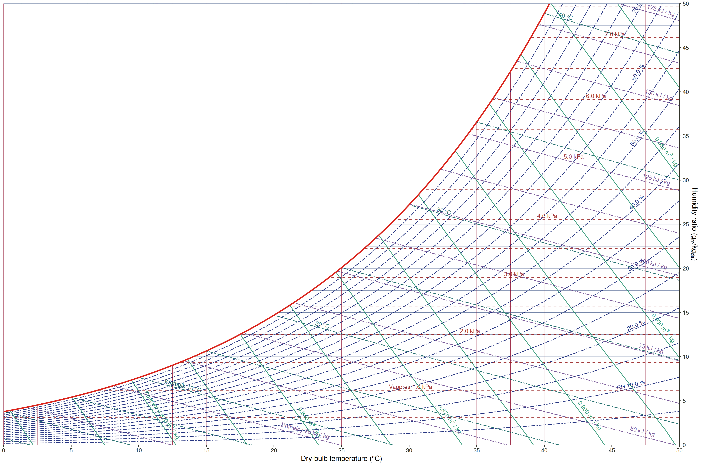
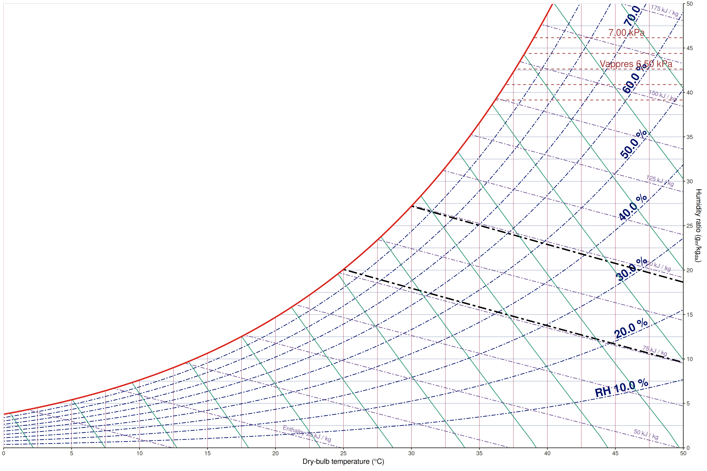
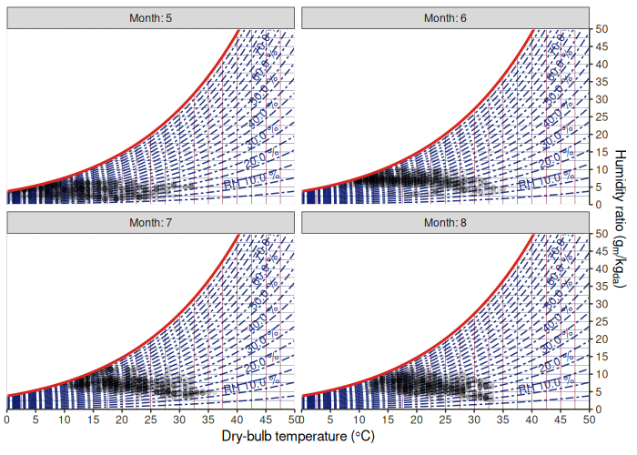
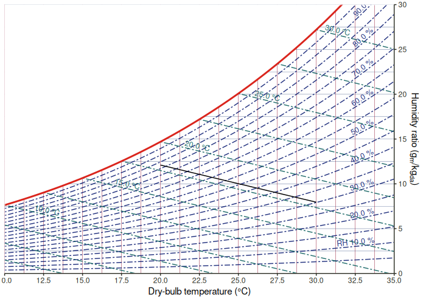

‘ggplot2’ extension for making psychrometric charts.
Installation
You can install the development version from GitHub with:
# install.packages("remotes") remotes::install_github("hongyuanjia/ggpsychro")
Example
The basic
Similar with ggplot2, the creation of a psychrometric chart using ggpsychro starts with function ggpsychro(). You can specify the range of dry-bulb temperature and humidity ratio using tab_lim and hum_lim and the unit system using units

You can also create a mollier chart by setting mollier to TRUE.
ggpsychro(mollier = TRUE)

By default, only dry-bulb temperature, humidity ratio and the saturation line are plotted.
The style of the saturation and area above it can be further styled using sat_style and mask_style.

Grid
ggpsychro introduces new ggplot geoms to add 5 more grids onto the base plot:
| Geom | Type |
|---|---|
geom_grid_relhum |
Relative humidity |
geom_grid_wetbulb |
Wet-bulb temperature |
geom_grid_vappres |
Vaper pressure |
geom_grid_specvol |
Specific volume |
geom_grid_enthalpy |
Enthalpy |
ggpsychro() + geom_grid_relhum() + geom_grid_wetbulb() + geom_grid_vappres() + geom_grid_specvol() + geom_grid_enthalpy()

Each of the new geom come along with a corresponding scale_* which can be used to further customize the breaks of each grid
ggpsychro() + geom_grid_relhum(alpha = 1.0, label.alpha = 1.0, label.size = 6, label.fontface = 2) + scale_relhum(minor_breaks = NULL) + geom_grid_wetbulb(size = 1.0, color = "black", alpha = 1.0, label_loc = NA) + scale_wetbulb(breaks = seq(25, 30, by = 5), minor_breaks = NULL) + geom_grid_vappres(label.size = 5) + scale_vappres(breaks = seq(6000, 7000, by = 500), limits = c(6000, 7000)) + geom_grid_specvol() + scale_specvol(labels = NULL) + geom_grid_enthalpy()

Stat
ggpsychro provides 5 new ggplot stats to use together with other common ggplot2 geoms::
| Stat | Type |
|---|---|
stat_relhum |
Relative humidity |
stat_wetbulb |
Wet-bulb temperature |
stat_vappres |
Vaper pressure |
stat_specvol |
Specific volume |
stat_enthalpy |
Enthalpy |
This makes it quick easy to add new elements.
Working together with ggplot2 orignal geoms is as simple as change stat to your variable name of interest.
library(eplusr) # for reading EPW data epw <- read_epw(file.path(eplus_config(8.8)$dir, "WeatherData/USA_CO_Golden-NREL.724666_TMY3.epw")) ggpsychro(epw$data()[month %in% 5:8]) + geom_grid_relhum() + geom_point(aes(dry_bulb_temperature, relhum = relative_humidity/100), stat = "relhum", alpha = 0.1) + facet_wrap(~month, labeller = as_labeller(function (x) paste0("Month: ", x)))

ggpsychro(tdb_lim = c(10, 35), hum_lim = c(0, 30)) + geom_grid_relhum() + geom_grid_wetbulb() + # 18 wet-bulb line with dry-bulb from 20 - 30 geom_line(aes(x = 20:30, wetbulb = 18), stat = "wetbulb")

Contribute
Please note that the ‘ggpsychro’ project is released with a Contributor Code of Conduct. By contributing to this project, you agree to abide by its terms.